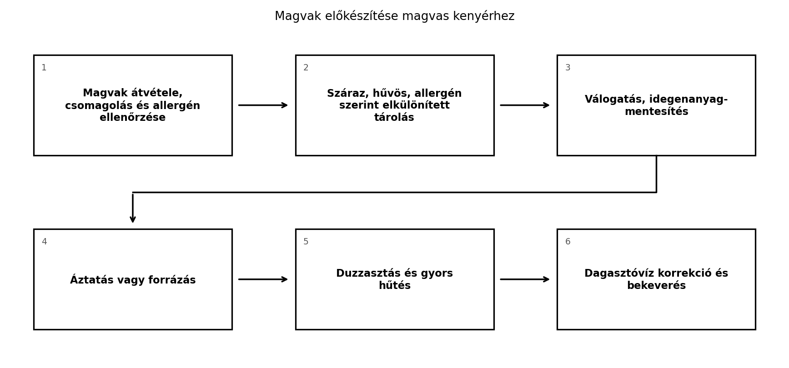

A pékség reggeli átadásakor a pultos megkérdezi a péktől: „Ez a cipó tényleg teljes kiőrlésű? A vevő kérdezte, mert cöliákiás családtagjának nem vehet ilyen kenyérfélét.” A pék nemcsak a termék ízét tudja megítélni, hanem azt is, hogy a termék neve mögött milyen összetételi feltétel áll. Ha a terméket „teljes kiőrlésűnek” vagy „magvasnak” nevezi, akkor a megnevezés nem lehet megtévesztő. Ebben az alfejezetben a félbarna, büfé- és összetételre utaló kenyeret gyártjuk le technológiai lap szerint, és megtanuljuk ellenőrizni a megnevezés feltételeit.
A magvas kenyerek gyártásában a magvak előkészítése gyakran külön lépés: átvétel, tárolás, válogatás, áztatás vagy forrázás, duzzasztás, hűtés, végül bekeverés. Az alábbi folyamatábra ezt a munkafolyamatot szemlélteti:

A magvak nem egyszerűen „belekevert díszítőanyagok”. A nem megfelelően előkészített mag leülepedik a tészta aljára, vizet von el a sikérhálóból, vagy mikrobiológiai kockázatot jelent. A lépések célját a következő szakaszokban részletezem.
Definíció. Félbarna kenyér az a kenyérféle, amelynek színe a fehér kenyérnél sötétebb, de a rozsos vagy rozskenyérnél világosabb. Ezt leggyakrabban úgy érik el, hogy BL 112-es (félbarna kenyérliszt) lisztet használnak, vagy a lisztkeverékben világos búzaliszt (BL 80) mellett teljes kiőrlésű búzalisztet vagy rozslisztet. A pontos liszt- és hamutartalom-előírást az adott termék gyártmánylapja és a Magyar Élelmiszerkönyv sütőipari termékekre vonatkozó rendelkezései tartalmazzák (ellenőrizendő: hatályos Élelmiszerkönyv-előírás).
Példa. Ha egy félbarna kenyér lisztkeveréke 70% BL 80 búzaliszt és 30% teljes kiőrlésű búzaliszt, a tészta színe középbarna, a béltapintat teltebb, a vízfelvevő képesség magasabb, mint a tiszta BL 80 lisztnél (ellenőrizendő: MÉ lisztelőírás). A tésztakitermelés a teljes kiőrlésű liszt miatt 3–8 százalékponttal emelkedhet (ellenőrizendő: üzemi technológiai lap).
Definíció. Büfékenyér a BL 112-es (félbarna kenyérliszt) vagy azzal egyenértékű lisztkeverékből készült, félbarna jellegű, kisebb darabtömegű kenyérféle, amelyet jellemzően pultból, szeletelve vagy egészben, hideg büféfogyasztásra szánnak (a kenyerek csoportosításával egyezően; ellenőrizendő: Magyar Élelmiszerkönyv büfékenyér-meghatározása). Ha a gyártmánylap zsiradékot, cukrot, tejport vagy tejet is megenged, a bélzet puhább, a héj vékonyabb lehet; tej vagy tejpor esetén a tej allergénként jelölendő. A büfékenyér pontos összetételi feltétele a gyártmánylapban van rögzítve (ellenőrizendő: hatályos Élelmiszerkönyv, gyártmánylap).
A összetételre utaló nevű kenyerek olyan termékek, amelyek megnevezése egy összetevőre utal: teljes kiőrlésű kenyér, magvas kenyér, burgonyás kenyér, tönkölyös kenyér, lenmagos kenyér stb.
Szabály. Ha a megnevezés egy összetevőt kiemel, a terméknek a megnevezésnek megfelelő, érzékelhető mennyiségben kell tartalmaznia azt az összetevőt. A fogyasztó nem vezethető félre sem a mennyiségben, sem az összetételben. Az 1169/2011/EU értelmében az élelmiszer megnevezése nem lehet téves, és ha az összetevő a megnevezésben szerepel, az adott összetevő mennyiségét általában az összetevők felsorolásában, százalékban meg kell adni (ellenőrizendő: 1169/2011/EU 7. és 22. cikk, valamint a QUID alkalmazásának hatósági útmutatója).
Továbbvitt eredmény. Az itt tanult megnevezési – összetételi gondolkodást a Rozsos kenyér és rozskenyér alfejezetben használjuk tovább, ahol a rozsliszt és kovász aránya erősebb, technológiai szerepe pedig még hangsúlyosabb.
A leggyakoribb összetételre utaló neveknél a pék ellenőrzi a beszállított anyagot, a gyártási tételt és a terméklapot.
Teljes kiőrlésű kenyér. A „teljes kiőrlésű” megnevezés akkor használható, ha a felhasznált gabonaőrlemény a teljes gabonaszem őrleményét tartalmazza a korpával, csírával és belső maggal együtt. A teljes kiőrlésű búzaliszt hamutartalma és rosttartalma magasabb, mint a BL 55-é. A termék nem gluténmentes, mert a búza gluténfehérjét tartalmaz (ellenőrizendő: Élelmiszerkönyv, a teljes kiőrlésű jelölés feltételei).
Magvas kenyér. A „magvas” megnevezésnél a termékben tényleges magvak vannak: napraforgómag, lenmag, tökmag, szezámmag, mák, esetleg diófélék. A magvak fajtáját és mennyiségét a gyártmánylap rögzíti. Ha a megnevezés egyetlen magot emel ki, pl. „lenmagos kenyér”, akkor annak mennyiségét a fogyasztói tájékoztatásban százalékban fel kell tüntetni, ha a 1169/2011/EU QUID-szabálya alapján alkalmazandó (ellenőrizendő: 1169/2011/EU 22. cikk hatósági értelmezése).
Burgonyás kenyér. A burgonyás kenyér tésztájába főtt, áttört burgonyát, burgonyapelyhet vagy burgonyapehelyből készült előfőzetet kevernek. A burgonya javítja a vízkötést, puhább bélzetet és hosszabb frissen tartást ad. A burgonya mennyisége a megnevezésben kiemelt összetevő miatt jelölendő (ellenőrizendő: QUID-alkalmazás, gyártmánylap).
Tönkölyös kenyér. A tönkölybúza (Triticum spelta) gluténtartalmú gabona. A tönkölyös kenyér tehát nem gluténmentes, ezért a cöliákiás fogyasztónak nem adható. A tönkölyös megnevezésnél a tönkölyőrlemény mennyiségét vagy arányát a gyártmánylap és a címke rögzíti. A tönkölyliszt sütőipari tulajdonságai eltérhetnek a közönséges búzaliszttétől: gyakran nagyobb vízfelvevő képességű, de a sikérje lágyabb lehet (ellenőrizendő: beszállítói specifikáció).
Gyakorlat. A pék a műszak elején ellenőrzi a termék technológiai lapját. Ha a lapon „teljes kiőrlésű magvas kenyér” szerepel, megnézi, hogy a liszt valóban teljes kiőrlésű-e, a magvak között van-e allergén, és a tészta mennyisége elegendő-e a megrendelt darabszámhoz.
A magvak és pelyhek előkészítése azért fontos, mert a száraz magvak vizet vonnak el a tészta sikérhálójától. Ha szárazon keverjük a lisztbe, a dagasztás során nem duzzadnak meg teljesen, a kelesztés alatt tovább szívják a vizet, és a sütés után kemény, ropogós, esetleg leülepedett magvakat kapunk.
Szabály. Az áztatás vagy forrázás során a magvakhoz adott vizet a dagasztóvíz mennyiségéből le kell vonni, mert a magvak vízzel együtt kerülnek a tésztába. Az áztatóvíz mennyiségét a következő összefüggéssel számítjuk:
ahol a magvak száraz tömege, pedig az áztatási víztényező, amely a mag fajtájától függ. A dagasztóvíz:
Példa. A technológiai lapon a lisztre vetített összes víz 78%, a liszt 3,500 kg. Az összes víz:
A magvak száraz tömege 15% a lisztre:
Ha az áztatási víztényező (szemléltető érték), akkor:
A dagasztóvíz így:
A nem állandó; a lenmag nagyobb, a napraforgómag kisebb víztényezőt igényelhet. Az értéket a gyártó vagy az üzemi technológiai lap adja meg (ellenőrizendő: gyártói adatlap, saját próba).
Hideg áztatás. A magvakat tiszta edénybe tesszük, annyi hideg ivóvizet öntünk rá, hogy ellepje, és hűtőben vagy hideg helyen legalább 1–2 órán át duzzasztjuk. A hűtőben tartást azért kell előírni, mert a magvak felületén csírák lehetnek, és szobahőmérsékleten a hosszú áztatás alatt elszaporodhatnak (ellenőrizendő: a pékség HACCP-terve, gyakorlati útmutató).
Forrázás. A magvakra forró, 90–100 °C közeli vizet öntünk, majd lefedve 10–20 percig duzzasztjuk. A forrázás csökkenti a felületi mikroorganizmus-számot, és gyorsabban duzzasztja a magvakat. A forrázatot felhasználás előtt azonban le kell hűteni, mert a meleg, nedves közegben a túlélő spórák szaporodni tudnak. A forrázott magvakat vékony rétegben, hűtőben vagy kevergetéssel gyorsan legfeljebb 5 °C-ra kell hűteni, és a HACCP-tervben rögzített időn belül fel kell használni (ellenőrizendő: HACCP-terv, hőmérséklet-idő határ).
HACCP. Az áztatott vagy forrázott magvak félkész terméknek minősülnek. Kritikus lehet a várakozási idő és hőmérséklet; a kb. 5–60 °C-os sávban a csíraszám gyorsan nőhet. A pék ezért a technológiai lapon rögzített időn belül dolgozza fel a magvakat, és a hűtőtárolást naplózza (ellenőrizendő: az üzem HACCP-terve, a NÉBIH jó higiéniai gyakorlati útmutatója).
Allergén. Az 1169/2011/EU rendelet II. melléklete szerint a gluténtartalmú gabonafélék, a szezámmag, a diófélék, a földimogyoró, a szója és a többi fő allergén jelenlétét a fogyasztói tájékoztatásban ki kell emelni (ellenőrizendő: 1169/2011/EU II. melléklet, hatályos szöveg).
Magvas kenyereknél az allergén jelölése attól függ, milyen magvak kerülnek a termékbe. A napraforgómag, a lenmag, a tökmag és a mák nem tartozik a 14 fő allergén közé, de a szezámmag igen. A diófélék és a földimogyoró szintén fő allergén, ezért ha a „magvak” között dió, mandula, mogyoró vagy pekándió van, azokat kiemelten kell jelölni. A glutén allergén mindig jelen van, mert a kenyér lisztje gluténtartalmú gabonából készül.
A jelölés feltétele, hogy a pék biztosan felismerje a magvakat. Az alábbi ábra közös léptékben mutatja a napraforgómagot (1), a barna és sárga lenmagot (2), a tökmagot (3), a natúr és hántolt szezámmagot (4), a mákot (5) és a dióbelet (6); az „ALLERGÉN” felirat a jelölésköteles magvakat emeli ki. Az alsó metszet azt mutatja, hogy a magvak a bélzetben és a héj felületén is ott vannak.
Tipikus tévesztés a natúr és a hántolt szezámmag összekeverése más világos magvakkal, illetve a mák és a lenmag felcserélése; a szezámmag és a dió viszont allergén, ezért a tévesztés jelölési hibához vezet. A héjra szórt mag morzsája a szomszédos termékekre is átkerülhet. A HTML-kiadásban a magokra mutatva megjelenik, allergén-e, és hogyan készítjük elő.
Szabály. A magvas kenyér gyártásában az allergén magvakat elkülönített, jól címkézett edényben tároljuk. Az adagolókanalat, mérőedényt munka után el kell mosni, mert a rátapadt magmaradvány keresztszennyeződést okozhat. A dagasztógép, a formázóasztal és a szakajtók tisztítását az allergénmentes termékek gyártása előtt ellenőrizni kell (ellenőrizendő: üzemi allergénkezelési terv).
Előre csomagolt terméknél az allergént az összetevők felsorolásában kell kiemelni (pl. „búzaliszt, rozskovászpor, szezámmag”), nem önálló „… tartalmaz” mondattal. Nem előre csomagolt terméknél (pult) a tájékoztatás más szabály szerint történik: a pult mellett írásos allergéntáblával vagy az előírt szóbeli tájékoztatással kell az allergén-információt biztosítani; a két esetet nem szabad összekeverni (ellenőrizendő: 1169/2011/EU, a nem előre csomagolt élelmiszerekre vonatkozó tagállami szabály).
Cél. Teljes kiőrlésű magvas cipó készítése a technológiai lap szerint 8 db, kb. 750 g késztermék tömegű tételben.
Eszközök és anyagok. Spirál dagasztógép, mérleg, rozsdamentes tál a magvak áztatásához, kanál, digitális maghőmérő, kelesztőszekrény, sütőlap vagy kő, sütőpapír, rács, kés, kelesztőkosár vagy kendővel bélelt tál, a technológiai lap anyagai.
Higiénia. A gyakorlathoz tiszta munkaruhát, hajhálót és csúszásmentes munkacipőt veszünk fel. Ékszert nem viselünk. A kezet belépéskor, nyersanyag-kezelés előtt és a mosdóból visszatérve is megmossuk. A munkafelületet, a dagasztó üstjét, a mérleget és a magvak edényét fertőtlenítő hatású, élelmiszer-iparban engedélyezett tisztítószerrel tisztítjuk, majd ivóvízzel öblítjük (ellenőrizendő: a tisztítószer gyártói utasítása).
Gépbiztonság. A dagasztógépet csak betanítás után, felügyelet mellett kezeljük. Üzem előtt ellenőrizzük a védőrácsot, a reteszelést és a vészleállót. A gépet tisztítani, a tésztát lekaparni csak leállított, áramtalanított, újraindítás ellen biztosított gépről, a keverőkar megállása után szabad. A forró magforrázat kezelésekor védőkesztyűt viselünk, az arcunkat a gőztől távol tartjuk.
Lépések.
Dokumentálás. A gyakorlat során rögzítjük a tésztahőmérsékletet, a kelesztési időt, a sütési időt és a maghőmérsékletet. Feljegyezzük a magvak áztatásának kezdetét, hőmérsékletét és a felhasználás idejét. Ez a HACCP-napló része.
Termék. Teljes kiőrlésű magvas kenyér, hosszú cipó, késztermék-tömeg kb. 750 g/db (850 g feladási tömeg, 12% sütési + hűlési veszteség: 850 · 0,88 = 748 g; tanulási példa), tétel: 8 db.
| Nyersanyag | Lisztre vetített % | Mennyiség (kg) | Megjegyzés |
|---|---|---|---|
| Teljes kiőrlésű búzaliszt | 100% | 3,500 | gluténtartalmú gabona |
| Víz (összes) | 78% | 2,730 | ebből áztatóvíz 0,630 kg |
| Rozskovászpor (aktív) | 4% | 0,140 | gyártói utasítás szerint rehidratálva |
| Só | 2% | 0,070 | finom étkezési só |
| Sütőélesztő (friss) | 2% | 0,070 | morzsoltan |
| Vegyes magvak (szárazon) | 15% | 0,525 | napraforgó-, len-, tökmag és szezám; allergén: szezám |
| Napraforgóolaj | 1,5% | 0,053 | a tészta lazításához |
| Összes tésztatömeg | 202,5% | 7,088 | a dagasztás utáni tömeg |
Műveleti paraméterek. A tésztahozam 202,5 kg 100 kg lisztből; a TA (liszt + víz) 178. A dagasztás spirál dagasztóban: 1. fokozat 4 perc, 2. fokozat 5–6 perc, tésztahőmérséklet 26–28 °C. Érlelés 45–60 perc, közben 30 percnél hajtogatás. Osztás 8 db, feladási tömeg 850 g/db. Gömbölyítés, 15 perc pihentetés, hosszú formázás. Kelesztés: 32 °C, 75–80% relatív páratartalom, 45–60 perc. Sütés: 230 °C-ról csökkentve, gőzölés az elején, 45–50 perc, maghőmérséklet 96–98 °C. Hűtés rácsokon legalább 60 perc. A feladási tömeg 8 × 850 g = 6,800 kg; a dagasztott tészta 7,088 kg, az erjedési veszteség 3%: 7,088 kg × 0,97 = 6,875 kg ≥ 6,800 kg, tehát a tészta elegendő (a maradék 75 g a próba- és mérési veszteség tartaléka).
Allergének. Glutént tartalmazó gabonák: búza, rozs (rozskovászpor); szezámmag. A termék nyomokban dióféléket, földimogyorót vagy szóját tartalmazhat, ha a gyártósor nem allergénmentes. A keresztszennyeződést az elkülönített tárolás, a külön adagoló eszközök és a gépek tisztítása csökkenti (ellenőrizendő: üzemi allergénkezelési terv).
HACCP- és minőségi pontok. Nyersanyag-átvételnél a liszt szennyeződésmentességét, a magvak csomagolásának sértetlenségét és az allergénazonosítást ellenőrizzük. A magvak áztatási/forrázási hőmérséklete és ideje, valamint a forrázat gyors hűtése kritikus szabályozási pont lehet. A sütési maghőmérséklet 96 °C feletti értéke biztosítja az átsültséget. A késztermék tömege kb. 750 g (tűrés a technológiai lap szerint; ellenőrizendő: tömegellenőrzési előírás), a bélzet egyenletes, a magvak eloszlanak, a héj színe sötétbarna, a vágási felület nem nyirkos.
A kiszedett kenyér minőségét a Minőség, minőségbiztosítás és fogyasztói tájékoztatás fejezet és az A kenyerek jellemzése, csoportosítása, anyagnormái és minőségi követelményei alfejezet szerint értékeljük. Mért jellemző a tömeg, a belső maghőmérséklet és a készméret. Érzékszervi jellemző a héj színe, a béltapintat, a magvak eloszlása, a héj vastagsága és az íz.
A teljes kiőrlésű magvas kenyér jellemzője a sötétebb, foltos héj, a barna, kissé tömör bél, a jól eloszlatott magvak, a kellemes pörköltmag-íz. Az alján feltorlódott magvak, a nyers bél, a repedezett vagy lapos cipó eltérés. A megfelelőség akkor áll fenn, ha a tömeg és az átsültség is megfelel a technológiai lapnak, és a termék neve nem téveszt meg a fogyasztó számára.
1. feladat (A): Sorolja fel, milyen lisztkeverék adhatja a félbarna kenyér jellegét.
2. feladat (A): Számítsa ki a dagasztóvizet, ha az összes víz 2,730 kg, a magvak száraz tömege 0,600 kg, az áztatási víztényező 1,1.
3. feladat (B): A teljes kiőrlésű magvas kenyér receptúráját méretezze át 6,000 kg lisztre. Mennyi lesz a magvak, az összes víz és az áztatóvíz, ha a százalékok azonosak maradnak (mag 15%, víz 78%, )?
4. feladat (B): Egy félbarna kenyér lisztkeveréke 70% BL 80 liszt (hamu 0,80%) és 30% teljes kiőrlésű búzaliszt (hamu 1,60%). Számítsa ki a keverék hamutartalmát. Hogyan használná ezt a lisztkeverék ellenőrzésére?
5. feladat (C): A magvas kenyér bélzetén a magvak az alján torlódnak, a bél alsó része nyirkos. Milyen három okot gyanít, és mit javítana a folyamatban?
6. feladat (D): A gyakorlat során a forrázott magvak hőmérséklete 32 °C, és a pék elmegy szünetre, mielőtt a dagasztáshoz hűtené a magvakat. Mi ebben a veszély, és mit kellett volna tennie a HACCP-terv szerint? Hogyan befolyásolja ez a kenyér mikrobiológiai biztonságát?
1. feladat (A): A félbarna kenyér jellegét jellemzően világos búzaliszt (pl. BL 80) és teljes kiőrlésű búzaliszt, esetleg rozsliszt keveréke adja. A pontos arányt a gyártmánylap rögzíti.
2. feladat (A):
3. feladat (B): Először az összes vizet és a magvak tömegét számítjuk a 6,000 kg lisztre.
A dagasztóvíz: .
4. feladat (B): A keverék hamutartalmát súlyozott átlaggal számoljuk:
Az ellenőrzéshez laboratóriumi hamu-meghatározást használunk. Ha a mért érték jelentősen eltér a számított 1,04%-tól, akkor a lisztkeverék aránya hibás.
5. feladat (C): Gyanított okok: (1) a magvak szárazon kerültek a tésztába, ezért nem duzzadtak meg; (2) a tészta túl lágy volt, a magvak lesüllyedtek; (3) a kelesztés túl hosszú, a sikérszerkezet elvesztette tartását. Javítás: a magvakat áztassuk/forrázzuk, a tésztakitermelést (TA) ne növeljük túl, és a kelesztést az ujjpróba szerint fejezzük be.
6. feladat (D): A 32 °C-os forrázott magvak a veszélyes zónában vannak, ahol a spórák csírázhatnak. A péknek a forrázott magvakat azonnal le kellett volna hűtenie, például jégfürdőbe vagy hűtőbe téve, illetve vékony rétegben kevergetve. A forrázatot csak a HACCP-tervben rögzített idő- és hőmérséklethatáron belül szabad felhasználni. Ha a magvak túl sokáig maradnak melegen, a kenyér mikrobiológiai kockázata nő, és a tételt akár meg is kell semmisíteni.
A félbarna kenyér jellegét a világos búzaliszt mellett teljes kiőrlésű búzaliszt vagy rozsliszt adja; a büfékenyér BL 112-es lisztből készülő, kisebb darabtömegű, félbarna jellegű kenyérféle. Az összetételre utaló megnevezés (pl. teljes kiőrlésű, magvas, burgonyás, tönkölyös) csak akkor használható, ha a termék a megnevezésnek megfelel, és a mennyiség a fogyasztói tájékoztatásban jelölhető. A magvakat áztatni vagy forrázni kell; az áztatóvizet a dagasztóvízből le kell vonni: . A forrázott magvakat gyorsan le kell hűteni, mert a meleg, nedves közeg mikrobiológiai kockázatot jelent. A magvas termékben az allergén magvakat, így a szezámmagot, dióféléket, a gluténtartalmú gabonát kiemelten kell jelölni, és a keresztszennyeződést elkülönített tárolással, adagolással és tisztítással kell megelőzni. Továbbvitt eredmény. A félbarna kenyér rozsliszt-arányának és a kovásznak a növelésével jutunk el a Rozsos kenyér és rozskenyér alfejezethez, ahol a rozsliszt technológiai szerepe és a savanyú kovász még erősebb.